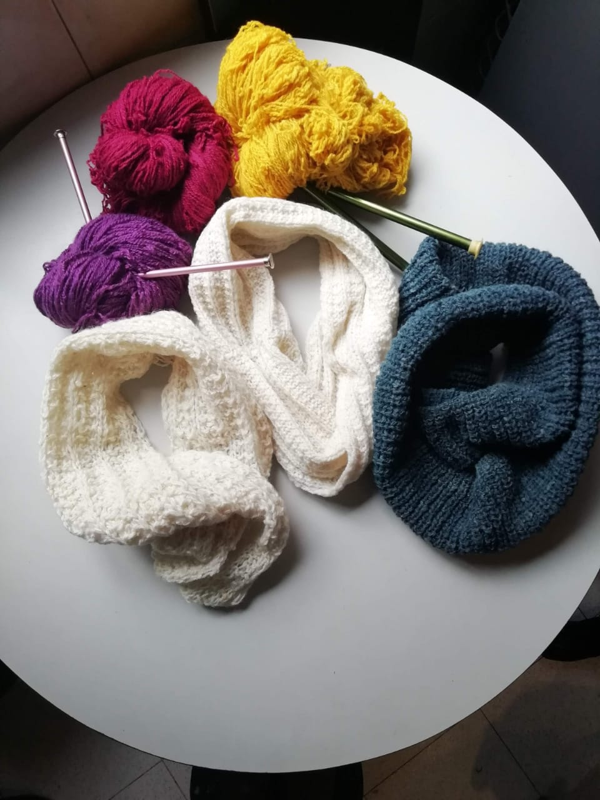
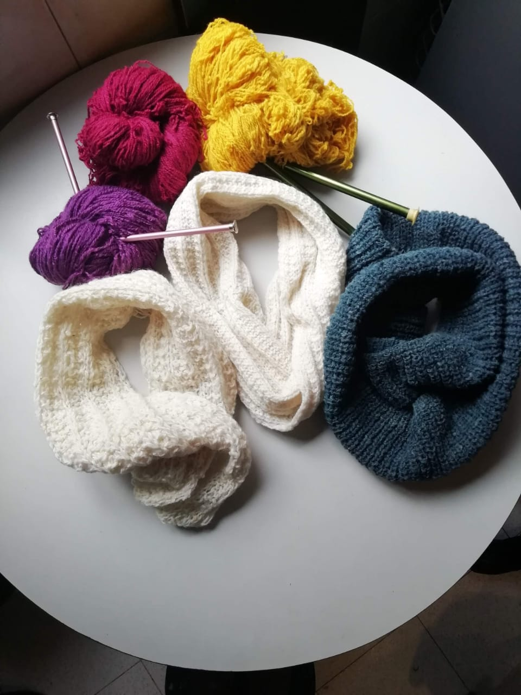

Silvia y Leonor Pineda son dos tejedoras tradicionales colombianas, iniciaron actividades desde 1964, a la fecha cuentan con más de 50 años en la tradicion del tejido a mano en lana natural, con varidad de colores, confeccionando sobre medidas con calidad de exportación, creando prendas únicas que perduran en el tiempo y el corazón.
 

Hecho en Colombia
Prendas tejidas A mano, en dos agujas, en lana natural